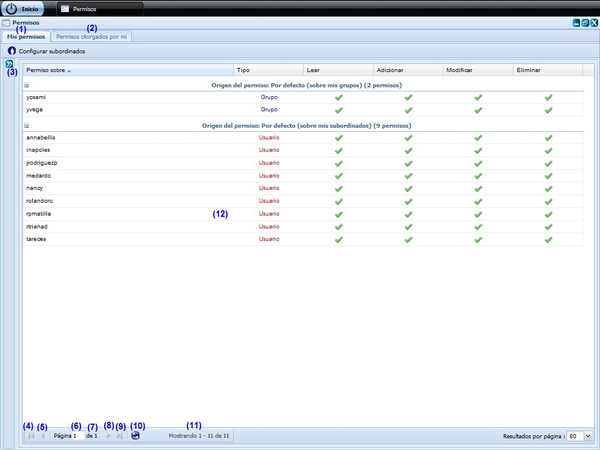
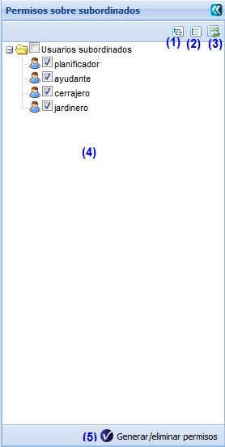
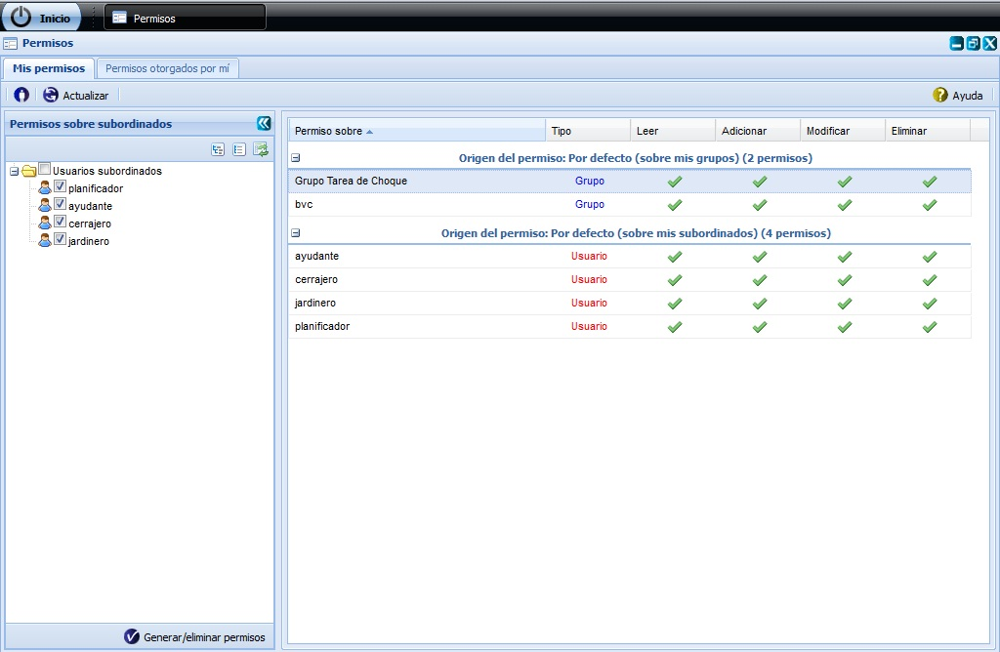
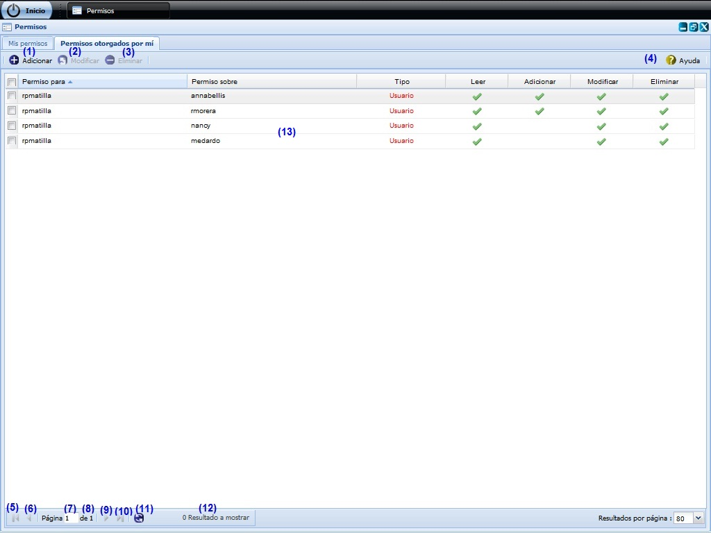
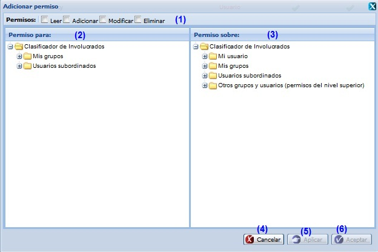
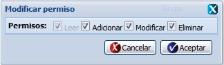

--PERMISOS--
En esta funcionalidad se gestionan los permisos otorgados a los usuarios. Para llegar a esta funcionalidad se puede acceder a través de la opción Inicio/Planificación /Planificación de actividades/Configuración/Permisos.
Una vez seleccionada la funcionalidad, aparecerá en pantalla la interfaz de la misma, donde el usuario autenticado podrá realizar las acciones que desee, en correspondencia con el acceso que tenga definido. Al acceder a la interfaz de Permisos, ver Figura 1, se muestra dos pestañas: Mis permisos y Permisos otorgados por mí.

Figura 1. Interfaz y acciones de la funcionalidad Permisos.
Las diferentes opciones que conforman la figura anterior permiten:
- Al seleccionar la pestaña Mis permisos se muestra al usuario los permisos que le han sido asignados previamente sin permitir la modificación o eliminación de ellos, ver acápite Mis permisos.
- Al seleccionar la pestaña Permisos otorgados por mí posibilita realizar operaciones con los permisos, ver acápite Permisos otorgados por mí.
- Al presionar el botón Configurar permisos sobre subordinados que se muestra en la parte superior izquierda de la interfaz se desplegará el panel permisos sobre subordinados, ver acápite Configurar permisos sobre subordinados.
- Ir a la primera página, mostrando los primeros usuarios.
- Ir a la página anterior.
- Muestra el número de la página donde se encuentra, se puede introducir el número.
- Muestra el número máximo de páginas.
- Ir a la siguiente página.
- Ir a la última página.
- Actualizar el listado de usuarios.
- Muestra la cantidad de resultados encontrados.
- Listado de usuarios.
Mis permisos
Configurar permisos sobre subordinados
Inicialmente cada usuario tiene permisos para adicionar elementos de la planificación a sus subordinados, por ejemplo: asignar una actividad o un objetivo, pero no le será posible ver todos los elementos de la planificación que pertenecen a sus subordinados. Dé clic en el campo de selección Usuarios subordinados para que pueda leer, modificar y eliminar los elementos de la planificación de sus subordinados. Seguidamente presione el botón Generar/eliminar permisos opción 5 de la Figura 2 para que le sean otorgados los permisos, ver Figura 3.

Figura 2. Operación Configurar permisos sobre mis subordinados.
Las diferentes opciones que conforman la figura anterior permiten:
- Expande todos los usuarios.
- Colapsa todos los usuarios.
- Refrescar todos los usuarios.
- Listado de usuarios subordinados.
- Generar o eliminar permisos.

Figura 3. Operación Generar/eliminar permisos.
Permisos otorgados por mí

Figura 4. Operaciones con los permisos.
Las diferentes opciones que conforman la figura anterior permiten:
- Adicionar permiso, ver acápite Adicionar permiso, esta acción permite adicionar permisos a usuarios o grupos de usuarios, cuando se presione el botón Aceptar o Aplicar de la interfaz el sistema mostrará un mensaje de información notificando que se adicionó el permiso.
- Modificar permiso, ver acápite Modificar permiso, esta acción permite modificar un permiso. Este botón estará deshabilitado hasta tanto no se haya seleccionado un permiso.
- Eliminar un permiso previamente seleccionado en el listado. Esta acción permite eliminar el(los) permiso(s) deseado(s), una vez seleccionado(s) se procede a seleccionar la opción Eliminar de la interfaz, automáticamente se mostrará un mensaje de confirmación, que se puede Aceptar o Cancelar según sea el caso, de presionar la opción Aceptar el sistema le mostrará un mensaje de información sobre el éxito de la operación realizada, quedando eliminado el(los) permiso(s) seleccionado(s), si cancela el mensaje de confirmación, el sistema permanece en la interfaz principal y no elimina el(los) permiso(s). Este botón estará deshabilitado hasta tanto no se haya seleccionado un permiso.
- Mostrar ayuda de la funcionalidad.
- Ir a la primera página, mostrando los primeros usuarios con sus permisos.
- Ir a la página anterior.
- Muestra el número de la página donde se encuentra, se puede introducir el número.
- Muestra el número máximo de páginas.
- Ir a la siguiente página.
- Ir a la última página.
- Actualizar el listado de usuarios con sus permisos.
- Mostrar la cantidad de resultados encontrados.
- Lista de usuarios con su(s) permisos(s).
Adicionar permiso
Para adicionar un permiso el procedimiento es el siguiente:
Se selecciona la opción Adicionar que se encuentra en la barra de acciones de la interfaz, ver opción (1) de la figura 4. Inmediatamente aparecerá una ventana donde se podrán especificar los permisos que se desean adicionar a un usuario o grupo de usuarios, ver figura 5.

Figura 5. Interfaz Adicionar permiso.
Las opciones de la figura anterior permiten:
- Seleccionar el (los) tipo(s) de permiso(s) que desea asignar.
- Seleccionar el grupo al cual le va a asignar el o los permisos seleccionados.
- Seleccionar usuarios o grupos de usuarios sobre los cuales se le permiten ejecutar los permisos seleccionados.
- Cancelar las acciones y salir de la interfaz sin guardar los datos.
- Guardar los datos y limpiar los campos de la interfaz, permitiendo adicionar otro permiso. Se muestra un mensaje de información sobre éxito de la operación realizada, se acepta el mensaje y se permanece en la misma interfaz.
- Adicionar el(los) permiso(s) al listado y cerrar la interfaz. Se muestra un mensaje de información sobre el éxito de la operación realizada, se acepta el mensaje y queda actualizado el listado existente en la interfaz principal.
Modificar permiso
Para modificar un permiso debe seleccionar el permiso deseado y se opta por la opción (2) de la Figura 4. Inmediatamente aparecerá una ventana donde podrá modificar el permiso seleccionado, ver Figura 6.

Figura 6. Interfaz Modificar permiso.
Seguidamente se modifica el permiso seleccionado y se presiona uno de los siguientes botones:
- Si presiona el botón Aceptar: Se muestra un mensaje de información sobre el éxito de la operación realizada, se acepta el mensaje y queda actualizado el listado existente en la interfaz principal.
- Si presiona el botón Cancelar: Se cierra la ventana para modificar permiso sin tener en cuenta la posibilidad de haber realizado algún cambio en el permiso.